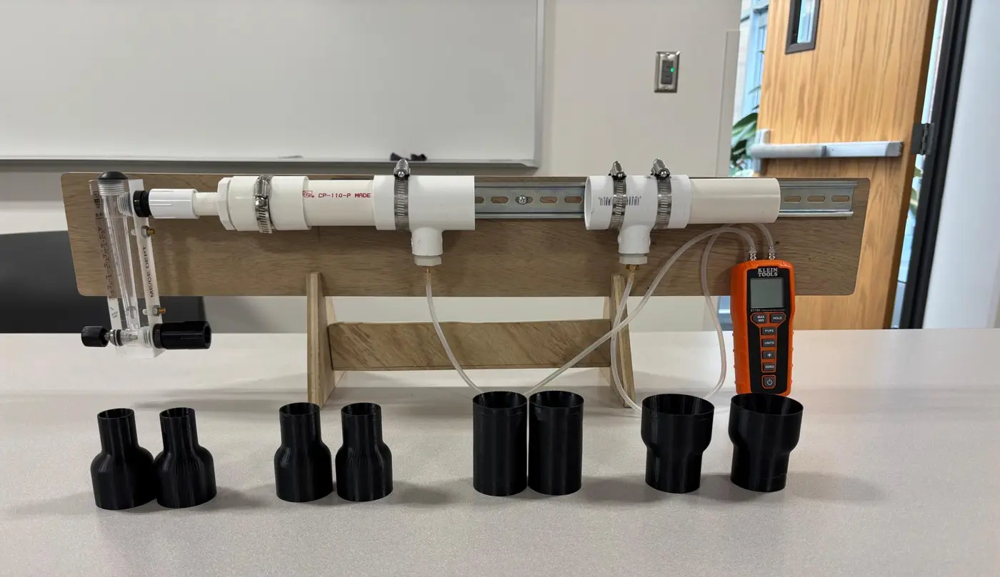
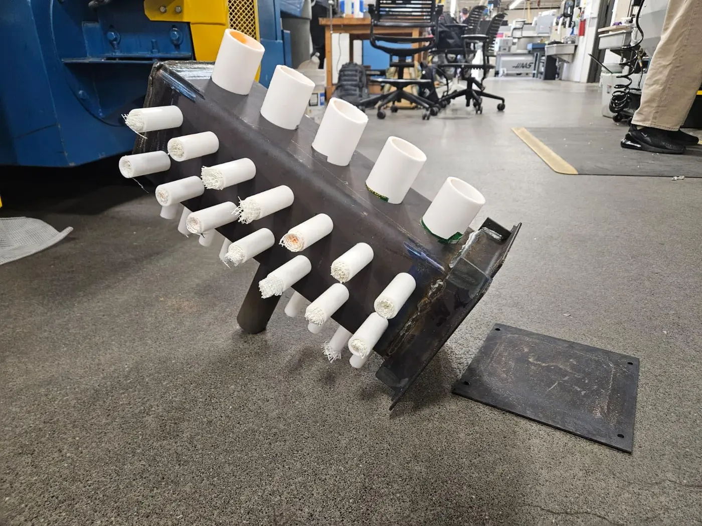
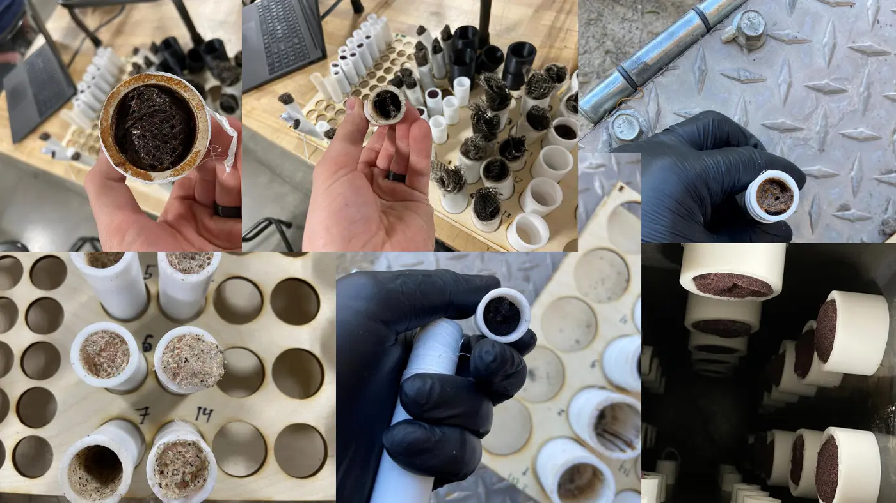

Ongoing · Fall 2026 ME 490 Special Problem · BYU–Idaho
RotoMesh Vent Packing
Vent-Filter Permeability Research
I’m continuing a capstone team’s vent-filter research for Athena Mechanical Supply, a rotational molding supplier. My focus is packing: I control how the vent media is packed and test whether different materials fall onto one permeability-vs-solidity curve, before and after a molding cycle.

Key Specs
| Role | Solo researcher, continuing a prior capstone team’s project |
| Course | ME 490 Special Problem, BYU–Idaho · Fall 2026 |
| Sponsor | Athena Mechanical Supply |
| Controlled variable | Packing: sample mass, packed length, and solidity |
| Materials | RotoMesh, Scotch-Brite, insulation, steel wool, plastic bag |
| Analysis | Darcy–Forchheimer fit of ΔP/L vs. superficial velocity for permeability (k₁) and inertial resistance (k₂) |
| Status | Bench optimized, ~10 setups run across 0.75–2 in tubes, post-bake data collected. Results not yet published. |
| Last updated | October 2026 |
The problem
Rotational molding heats powdered plastic inside a closed, spinning mold. The mold needs a vent so air can move as it heats and cools, and the vent is packed with filter media to keep powder in. If melted plastic blocks the vent during cooling, the part can pull in and form defects. Athena sells RotoMesh as a vent packing and wants to know how it compares with the materials molders commonly use.
Where I started
A capstone team (Kayden Staley, Hunter Fuller, Matthew Peffer, and David Vogel) built the pressure-drop test bench, the sample mold, and the first round of material comparisons. Their design and data are theirs. I took over the project to push it further and to fix the parts of the measurement chain I inherited before building on it.
What I’m changing
The earlier comparisons didn’t control how tightly each tube was packed, so differences between materials could come from packing rather than the material itself. I’m making packing the controlled variable: I record sample mass and packed length for every setup, compute solidity, and sweep packing density for each material. If the materials collapse onto one permeability-vs-solidity curve, packing matters more than material choice. If they don’t, the material does.
I reduce each run with a Darcy–Forchheimer fit of pressure gradient (ΔP/L) against superficial velocity. The linear term gives permeability (k₁) and the quadratic term gives inertial resistance (k₂). I built the calculation in Excel and I’m re-reducing the prior team’s data the same way so everything sits on one basis.

Before and after molding
Vent media sees heat and plastic vapor in service, so I test it both new and after a bake. I pack samples into tubes on the sample mold, run the mold through a full rotational molding cycle, and put the same samples back on the bench to compare.

Done so far
I learned and optimized the pressure-drop bench, ran about ten setups across 0.75 to 2-inch tubes, ran the sample mold through a full molding cycle, collected post-bake data, and built the permeability calculation in Excel.
What’s next
Run density sweeps across all five materials, finish the before-and-after comparison, and present the work at the BYU–Idaho Research & Creative Works Conference in December 2026. I’ll add results here once they’re ready to share.